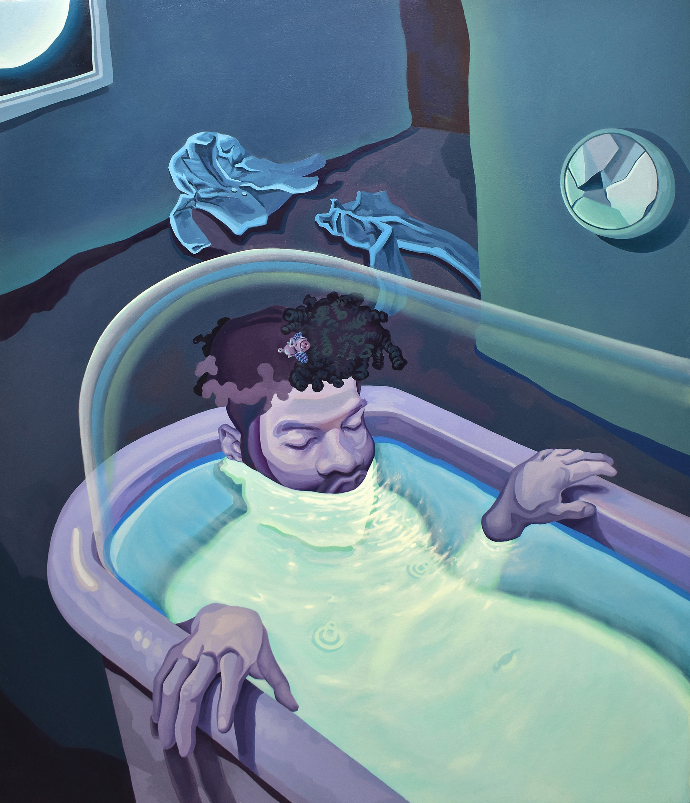

Taking Socks Off
Pedro Troncoso
Oil, Acrylic on Canvas
48 x 40 in
My work consists of self-portraits or imagined alter egos inhabiting dark intimate interior spaces. Like my
room, where I overthink the external social pressures such as acceptance, gender roles, and self-image.
Through the manipulation of the figure, I construct magical ironic, and contradictory scenarios reflecting
discomfort and joy in adulthood. Reminding me how our identity is distorted and threatened by societal
pressures. By using imagination, the only playable toy remaining in adulthood, I reflect on psychological
individuality and the personal-social dilemma: what does it even mean to be our ‘real selves’ in present
times?